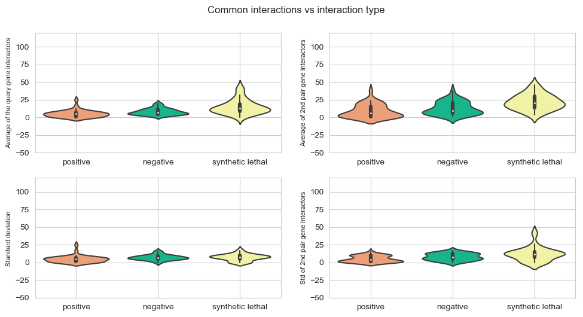
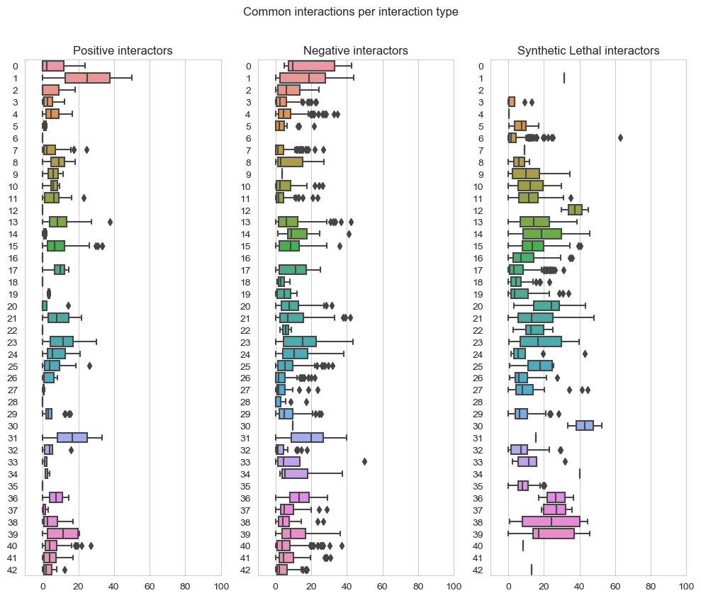
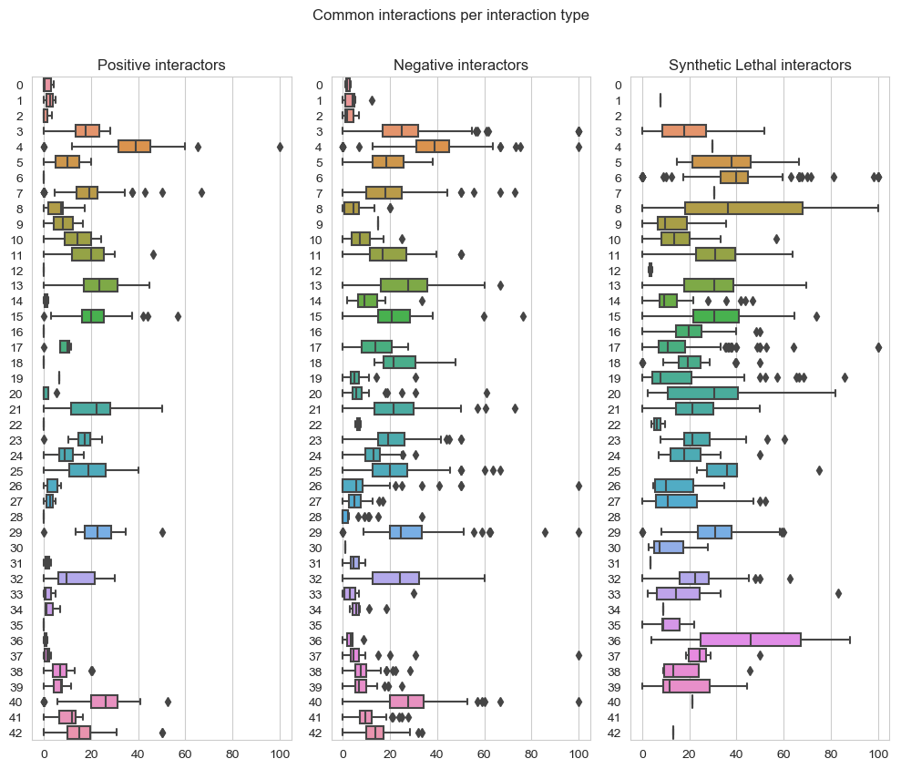
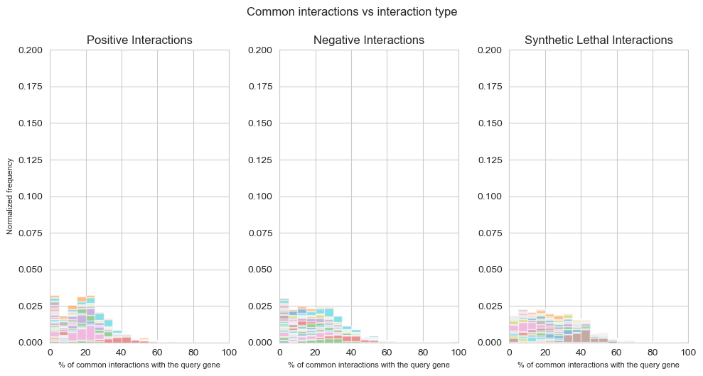
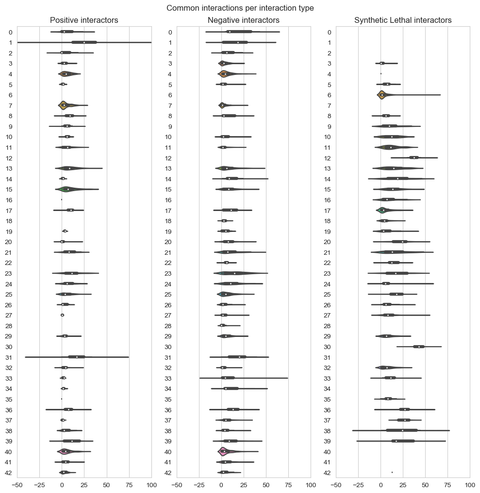

4. Title : 16082019 Script for the visualization of the correlation between number of common interactions and type of interactions 🧐¶
import pandas as pd
import numpy as np
from collections import defaultdict
import seaborn as sns
import matplotlib.pyplot as plt
from statistics import mean
%matplotlib inline
def query_interactions(query):
d2 = defaultdict(dict)
data=pd.read_excel(r'C:\Users\linigodelacruz\Documents\PhD_2018\Documentation\Calculations\data_sgd\Interaction_data_sgd_downloads.xlsx',header=17,encoding="utf-8-sig")
col_label=data.columns.values
#query=['CLN1']
# giant for loop
names1 = query
i=-1
for query1 in names1:
#filtering the table just for the value of the query
q1 = data[data['Standard_Gene_Name_(Bait)']==query1]
#r=get_row(query1)
#df1 = pd.DataFrame(q1, columns=["excel_number", "Interactors of query1"])
#gb1 = df1.groupby("Interactors of query1", sort=False) # the grouping reorganizes the set alphatically, the sort by default is true!!!!!!
#gb1_row = df1.groupby("excel_number",sort=False)
q1_interact=q1[col_label[3]].unique()
# a for loop for all the interactors of query
for query2 in q1_interact:
#i+=1
# write in a matrix , where the 1st column are the names in q1 and the first row = q1[0]+get_query(q1[0])
q2=data[data['Standard_Gene_Name_(Bait)']==query2] #these are get_query(q1[i])
q2_interact=q2[col_label[3]].unique()
# how to avoid that df2 overlaps with the next value?
#df2 = pd.DataFrame(q2, columns=["excel raw number of q2", "Interactors of query2"])
#gb2 = df2.groupby("Interactors of query2",sort=False)
#names3 = [name3 for name3, row2 in gb2] # to visualize what is in the interactors for query 2
d = defaultdict(int)
common = []
for name1 in q2_interact:
if name1 in q1_interact: # if a gene interactor of the query1 is in interactors of query 2
common.append(name1)
d[name1] += 1
d2[query1, query2]["common"] = common
d2[query1,query2]["names of genes"]=query2
d2[query1, query2]["n_common"] = len(common)
d2[query1, query2]["query gene info length"] = len(q1_interact)
d2[query1, query2]["interactors of query gene info length"] = len(q2_interact)
if len(q1)==0:
d2[query1, query2]["% of query subset"] = 0
else:
d2[query1, query2]["% of query subset"] = len(d)/len(q1_interact) *100
if len(q2)==0:
d2[query1, query2]["% of query 2 subset "] = 0
else:
d2[query1, query2]["% of query 2 subset "] = len(d)/len(q2_interact) *100
q1_filt=q1[q1[col_label[3]]==query2]
# if q1_filt[col_label[4]].any()=='Synthetic Lethality ':
interactions_lethality=(q1_filt[col_label[4]]=='Synthetic Lethality')
interactions_negative=(q1_filt[col_label[4]]=='Negative Genetic')
interactions_positive=(q1_filt[col_label[4]]=='Positive Genetic')
d2[query1,query2]["Type"]= 'not clear interaction'
if interactions_lethality.any()==True:
d2[query1,query2]["Type"]= 'Synthetic Lethality'
#else:
# if interactions_lethality.all()==False and interactions_negative.any()==False and interactions_positive.any()==False:
#d2[query1,query2]["Type"]='Not clear'
if interactions_negative.all()==True:
d2[query1,query2]["Type"]= 'Negative'
#else:
# if interactions_lethality.all()==False and interactions_negative.any()==False and interactions_positive.any()==False:
#d2[query1,query2]["Type"]='Not clear'
if interactions_positive.all()==True:
d2[query1,query2]["Type"]= 'Positive'
#else:
# if interactions_lethality.all()==False and interactions_negative.any()==False and interactions_positive.any()==False:
#d2[query1,query2]["Type"]='Not clear'
# else:
d2[query1,query2]["interact_annotation"]=q1_filt[col_label[4]]
df=pd.DataFrame(d2).T
df_sorted=df.sort_values(by=['% of query subset'])
df_sorted=df_sorted[::-1]
df_sorted.to_excel("data_output_"+ "".join(query) + ".xlsx")
data=pd.read_excel(r'C:\Users\linigodelacruz\Documents\PhD_2018\Documentation\Calculations\Functions\data_output_'+ "".join(query) + ".xlsx")
return data
genes_passed=[['NRP1'],['BEM3'],['GPR1'],['ACT1'],['BRE5'],['CDC28'],['HSP82'],['CDC3'],['ADE13'],['SEC14'],['ARP2'],['BIM1'],
['BEM4'], ['BUB3'],['CNB1'],['GIM3'],['LTE1'],['MAD1'],['PHO85'],['SEC15'],['SEC3'],['SMI1'],['SMY1'],['SWI4'],
['BEM2'],['BEM1'], ['CDC24'],['CDC42'],['RDI1'],['CLA4'],['RSR1'],['RGA1'],['BNI1'],['GIC2'],['BNR1'],
['MYO1'],['MSB3'],['EXO70'],['CLN1'],['CLN2'],['IRA2'],['WHI2'],['WHI3']]
```python
data_test=[]
for names in genes_passed:
output=query_interactions(names)
data_test.append(output)
## Functions
def positive_int(data):
return data[data['Type']=='Positive']['% of query subset']
def positive_query2(data):
return data[data['Type']=='Positive']['% of query 2 subset ']
def negative_int(data):
return data[data['Type']=='Negative']['% of query subset']
def negative_query2(data):
return data[data['Type']=='Negative']['% of query 2 subset ']
def lethal_int(data):
return data[data['Type']=='Synthetic Lethality']['% of query subset']
def lethal_query2(data):
return data[data['Type']=='Synthetic Lethality']['% of query 2 subset ']
## Positive Interactions
data_positive=[]
data_positive_query2=[]
for names in data:
data_positive.append(positive_int(names))
data_positive_query2.append(positive_query2(names))
## Negative Interactions
data_negative=[]
data_negative_query2=[]
for names in data:
data_negative.append(negative_int(names))
data_negative_query2.append(negative_query2(names))
## Synthetic Lethal interactions
data_lethality=[]
data_lethality_query2=[]
for names in data:
data_lethality.append(lethal_int(names))
data_lethality_query2.append(lethal_query2(names))
## Average
mean_values_positive=[]
mean_values_positive_query2=[]
std_values_positive=[]
std_values_positive_query2=[]
mean_values_negative=[]
std_values_negative=[]
mean_values_negative_query2=[]
std_values_negative_query2=[]
mean_values_lethal=[]
std_values_lethal=[]
mean_values_lethal_query2=[]
std_values_lethal_query2=[]
for i in range(0,len(data)):
mean_values_positive.append(np.mean(data_positive[i]))
mean_values_positive_query2.append(np.mean(data_positive_query2[i]))
std_values_positive.append(np.std(data_positive[i]))
std_values_positive_query2.append(np.std(data_positive_query2[i]))
mean_values_negative.append(np.mean(data_negative[i]))
std_values_negative.append(np.std(data_negative[i]))
mean_values_negative_query2.append(np.mean(data_negative_query2[i]))
std_values_negative_query2.append(np.std(data_negative_query2[i]))
mean_values_lethal.append(np.mean(data_lethality[i]))
std_values_lethal.append(np.std(data_lethality[i]))
mean_values_lethal_query2.append(np.mean(data_lethality_query2[i]))
std_values_lethal_query2.append(np.std(data_lethality_query2[i]))
mean_values=[mean_values_positive,mean_values_negative,mean_values_lethal]
mean_values_query2=[mean_values_positive_query2,mean_values_negative_query2,mean_values_lethal_query2]
std_values=[std_values_positive,std_values_negative,std_values_lethal]
std_values_query2=[std_values_positive_query2,std_values_negative_query2,std_values_lethal_query2]
## Violin plot for the averages and std for each gene positive, negative and synthetic lethal interactions
## Data quality
# Make a dictionary with one specific color per group:
my_pal = {"#ff9966", '#ffff99', '#00cc99'}
fig, axes = plt.subplots(2, 2, figsize=(10,5), dpi=100, sharex=True, sharey=True)
plt.subplots_adjust(bottom=0.2, right=0.5, top=1.4)
fig.suptitle('Common interactions vs interaction type',x=0.5,y=1.05)
plt.subplot(2,2, 1)
sns.violinplot(data=mean_values,scale="count",palette = my_pal)
plt.xticks(np.arange(0,3),['positive','negative','synthetic lethal'])
plt.ylabel('Average of the query gene interactors',{'fontname':'Arial', 'size':'8'})
plt.grid(True)
plt.ylim(-50,120)
plt.subplot(2,2,2)
#sns.stripplot(data=mean_values,palette = my_pal)
sns.violinplot(data=mean_values_query2,scale="count",palette = my_pal)
plt.xticks(np.arange(0,3),['positive','negative','synthetic lethal'])
plt.grid(True)
plt.ylim(-50,120)
plt.ylabel('Average of 2nd pair gene interactors',{'fontname':'Arial', 'size':'8'})
plt.subplot(2,2, 3)
sns.violinplot(data=std_values,scale="count",palette = my_pal)
plt.xticks(np.arange(0,3),['positive','negative','synthetic lethal'])
plt.ylabel('Standard deviation ',{'fontname':'Arial', 'size':'8'})
plt.grid(True)
plt.ylim(-50,120)
plt.subplot(2,2,4)
#sns.stripplot(data=std_values,palette = my_pal)
sns.violinplot(data=std_values_query2,scale="count",palette = my_pal)
plt.xticks(np.arange(0,3),['positive','negative','synthetic lethal'])
plt.grid(True)
plt.ylim(-50,120)
plt.ylabel('Std of 2nd pair gene interactors',{'fontname':'Arial', 'size':'8'})
plt.tight_layout()
plt.savefig("violinplot-average-std-common-interactors-vs-interaction-type.svg",dpi=300,format='svg')
plt.savefig("violinplot-average-std-common-interactors-vs-interaction-type.png",dpi=300,format='png')
C:\Users\linigodelacruz\AppData\Local\Continuum\anaconda3\lib\site-packages\scipy\stats\stats.py:1713: FutureWarning: Using a non-tuple sequence for multidimensional indexing is deprecated; use `arr[tuple(seq)]` instead of `arr[seq]`. In the future this will be interpreted as an array index, `arr[np.array(seq)]`, which will result either in an error or a different result.
return np.add.reduce(sorted[indexer] * weights, axis=axis) / sumval

fig, axes = plt.subplots(1, 3, figsize=(10,8), dpi=100, sharex=True, sharey=True)
fig.suptitle('Common interactions per interaction type',x=0.5,y=1.05)
plt.subplot(1,3, 1)
plt.title('Positive interactors')
plt.grid(True)
plt.ylabel('')
plt.xlim(-10,100)
ax = sns.boxplot(data=data_positive,orient="h")
sns.set_style("whitegrid")
plt.subplot(1,3, 2)
plt.title('Negative interactors')
plt.grid(True)
plt.xlim(-10,100)
ax1 = sns.boxplot(data=data_negative,orient="h")
sns.set_style("whitegrid")
plt.subplot(1,3,3)
plt.title('Synthetic Lethal interactors')
plt.grid(True)
plt.xlim(-10,100)
ax2 = sns.boxplot(data=data_lethality,orient="h")
sns.set_style("whitegrid")
plt.subplots_adjust(bottom=0.5, right=1.4, top=1.4)
plt.tight_layout()
plt.savefig("boxplot-common-interactors-vs-interaction-type.tiff",dpi=300,format='tiff')
plt.savefig("boxplot-common-interactors-vs-interaction-type.png",dpi=300,format='png')

fig, axes = plt.subplots(1, 3, figsize=(10,8), dpi=100, sharex=True, sharey=True)
fig.suptitle('Common interactions per interaction type',x=0.5,y=1.05)
plt.subplot(1,3, 1)
plt.title('Positive interactors')
plt.grid(True)
plt.ylabel('')
plt.ylim(0,100)
ax = sns.boxplot(data=data_positive_query2,orient="h")
sns.set_style("whitegrid")
plt.subplot(1,3, 2)
plt.title('Negative interactors')
plt.grid(True)
plt.ylim(0,100)
ax1 = sns.boxplot(data=data_negative_query2,orient="h")
sns.set_style("whitegrid")
plt.subplot(1,3,3)
plt.title('Synthetic Lethal interactors')
plt.grid(True)
plt.ylim(0,100)
ax2 = sns.boxplot(data=data_lethality_query2,orient="h")
sns.set_style("whitegrid")
plt.subplots_adjust(bottom=0.5, right=1.4, top=1.4)
plt.tight_layout()
plt.savefig("boxplot-2nd-pair-common-interactors-vs-interaction-type.tiff",dpi=300,format='tiff')
plt.savefig("boxplot-2nd-pair-common-interactors-vs-interaction-type.png",dpi=300,format='png')

## Plots histogram
fig, axes = plt.subplots(1, 3, figsize=(10,5), dpi=100, sharex=True, sharey=True)
fig.suptitle('Common interactions vs interaction type',x=0.5,y=1.05)
kwargs_positive = dict(alpha=0.5, bins=20, density=True, stacked=True)
kwargs_negative = dict(alpha=0.5, bins=20, density=True, stacked=True)
kwargs_lethal = dict(alpha=0.5, bins=20, density=True, stacked=True)
# Set the font dictionaries (for plot title and axis titles)
title_font = {'fontname':'Arial', 'size':'16', 'color':'black', 'weight':'normal',
'verticalalignment':'bottom'} # Bottom vertical alignment for more space
axis_font = {'fontname':'Arial', 'size':'8'}
## Positive Interactions
plt.subplots_adjust(bottom=0.5, right=1.4, top=1.4)
#fig.suptitle('This is a somewhat long figure title', fontsize=16)
plt.subplot(1,3, 1)
plt.grid(True)
plt.ylabel('Normalized frequency',**axis_font)
plt.xlabel('% of common interactions with the query gene',**axis_font)
plt.xlim(0,100)
plt.ylim(0,0.2)
plt.hist(data_positive_query2[1:len(data_positive_query2)],**kwargs_positive,label=['Positive Interactions'],cumulative=False)
plt.title('Positive Interactions')
plt.subplot(1,3, 2)
plt.grid(True)
#plt.ylabel('Normalized frequency',**axis_font)
plt.xlim(0,100)
plt.ylim(0,0.2)
plt.xlabel('% of common interactions with the query gene',**axis_font)
plt.hist(data_negative_query2[1:len(data_negative_query2)],**kwargs_negative,label=['Negative Interactions'],cumulative=False)
plt.title('Negative Interactions')
plt.subplot(1,3, 3)
plt.grid(True)
#plt.ylabel('Normalized frequency',**axis_font)
plt.xlim(0,100)
plt.ylim(0,0.2)
plt.xlabel('% of common interactions with the query gene',**axis_font)
plt.hist(data_lethality_query2[1:len(data_lethality_query2)],**kwargs_lethal,label=['Lethality Interactions'],cumulative=False)
plt.title('Synthetic Lethal Interactions')
plt.tight_layout()
plt.savefig("common-interactors-vs-interaction-type.tiff",dpi=300,format='tiff')

fig, axes = plt.subplots(1, 3, figsize=(10,10), dpi=100, sharex=True, sharey=True)
fig.suptitle('Common interactions per interaction type',x=0.5,y=1.01)
plt.subplot(1,3, 1)
plt.title('Positive interactors')
plt.grid(True)
plt.ylabel('')
plt.xlim(-50,100)
ax = sns.violinplot(data=data_positive,scale="count",orient='h')
sns.set_style("whitegrid")
plt.subplot(1,3, 2)
plt.title('Negative interactors')
plt.grid(True)
plt.xlim(-50,100)
ax1 = sns.violinplot(data=data_negative,scale="count",orient='h')
sns.set_style("whitegrid")
plt.subplot(1,3,3)
plt.title('Synthetic Lethal interactors')
plt.grid(True)
plt.xlim(-50,100)
ax2 = sns.violinplot(data=data_lethality,scale="count",orient='h')
sns.set_style("whitegrid")
plt.subplots_adjust(bottom=0.5, right=1.4, top=1.4)
plt.tight_layout()
plt.savefig("violinplot-common-interactors-vs-interaction-type.tiff",dpi=300,format='tiff')
C:\Users\linigodelacruz\AppData\Local\Continuum\anaconda3\lib\site-packages\scipy\stats\stats.py:1713: FutureWarning: Using a non-tuple sequence for multidimensional indexing is deprecated; use `arr[tuple(seq)]` instead of `arr[seq]`. In the future this will be interpreted as an array index, `arr[np.array(seq)]`, which will result either in an error or a different result.
return np.add.reduce(sorted[indexer] * weights, axis=axis) / sumval
